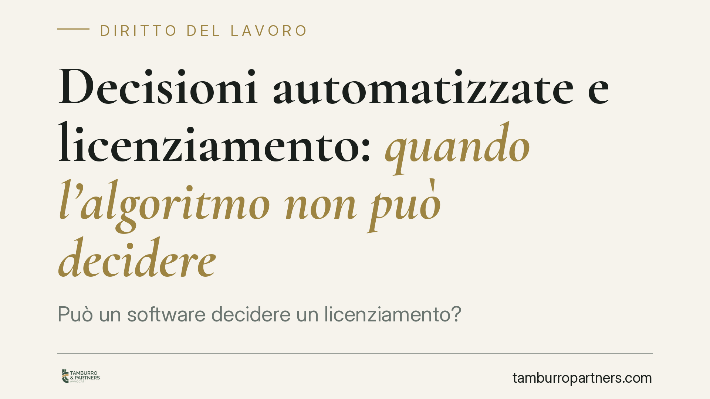

Decisioni automatizzate e licenziamento: quando l'algoritmo non può decidere
Può un software decidere un licenziamento? Il tema non è teorico: l'uso di sistemi di intelligenza artificiale nella gestione del personale cresce, e il quadro europeo li classifica tra gli strumenti ad alto rischio. Vediamo cosa dice oggi la normativa certa, quali spazi restano aperti e cosa conviene verificare prima di affidare a un algoritmo scelte che incidono sul rapporto di lavoro.

Il contesto
L'adozione di strumenti di intelligenza artificiale nei processi HR — selezione, valutazione delle performance, segnalazione di criticità disciplinari — è ormai diffusa. La domanda giuridica è una sola: fino a che punto una macchina può incidere su un provvedimento che tocca la vita professionale di una persona?
Attorno a questo interrogativo circolano ricostruzioni che anticipano l'esistenza di un decreto interno di attuazione dell'AI Act con regole puntuali sulla nullità del licenziamento "algoritmico". Avvertenza redazionale: alla data di questo contributo non ci risulta verificabile su Gazzetta Ufficiale e Normattiva un decreto legislativo con numero, articolo e data di entrata in vigore corrispondenti a quelli talvolta citati. Ci atteniamo perciò alle sole fonti certe, segnalando come ipotesi ciò che non lo è.
Inquadramento normativo
La fonte certa è il Regolamento (UE) 2024/1689 (c.d. AI Act). L'Allegato III qualifica come ad alto rischio i sistemi di IA utilizzati nell'ambito del lavoro, in particolare per l'assunzione, l'assegnazione dei compiti, la valutazione delle prestazioni e le decisioni su promozione o cessazione del rapporto.
Per i sistemi ad alto rischio l'AI Act impone, tra l'altro, la sorveglianza umana (art. 14): persone fisiche devono poter comprendere il funzionamento del sistema, interpretarne gli esiti e, ove necessario, disattenderlo. È il principio dello *human oversight*: lo strumento supporta, non sostituisce il decisore.
Va poi richiamato il Regolamento (UE) 2016/679 (GDPR), art. 22, che riconosce all'interessato il diritto di non essere sottoposto a una decisione basata unicamente su trattamento automatizzato che produca effetti giuridici rilevanti. Un licenziamento rientra pacificamente in questa categoria.
Ciò che non deriva automaticamente da queste fonti è una specifica sanzione di nullità del licenziamento adottato con IA. La nullità, nel nostro ordinamento, presuppone una norma imperativa violata (art. 1418 c.c.) o una delle ipotesi tipizzate dalla disciplina del lavoro. Affermare oggi, in termini assoluti, che "il licenziamento algoritmico è nullo" significa anticipare una conclusione che richiede una base normativa interna da confermare.
Implicazioni pratiche
La distinzione decisiva è tra strumenti di supporto e strumenti che determinano la decisione finale.
Un software che aggrega dati, segnala anomalie o propone una graduatoria resta uno strumento istruttorio: la decisione la prende una persona. Un sistema che, di fatto, produce l'esito e lascia all'uomo solo la firma realizza invece il cosiddetto rubber stamping — la sorveglianza umana meramente formale, che l'art. 14 dell'AI Act mira a escludere.
Il punto non è possedere un passaggio umano qualsiasi, ma garantire un potere effettivo e autonomo del decisore: capacità di esaminare il caso, discostarsi dall'output, motivare in modo proprio. Un "clic di conferma" non soddisfa questo requisito.
Sul piano delle conseguenze, è bene tenere distinte nullità e annullabilità. La nullità colpisce l'atto affetto da un vizio radicale (contrarietà a norma imperativa, causa illecita): è imprescrittibile quanto all'azione di accertamento e, nel licenziamento, apre di regola alla reintegrazione. L'annullabilità presuppone invece un atto valido fino all'impugnazione, soggetta a termini. Per i rapporti cui si applica il d.lgs. 23/2015 (assunti dal 7 marzo 2015) il licenziamento nullo comporta reintegra ai sensi dell'art. 2; per i rapporti soggetti all'art. 18 l. 300/1970, la tutela reintegratoria piena opera nelle ipotesi di nullità ivi previste.
Cosa fare in concreto
- Mappare i sistemi IA già in uso nei processi HR e classificarli: supporto istruttorio o incidenza sulla decisione finale.
- Formalizzare il passaggio umano nei provvedimenti disciplinari e di recesso, documentando l'esame autonomo del decisore e le ragioni, anche quando divergono dall'output del sistema.
- Verificare la conformità all'art. 22 GDPR: nessuna decisione rilevante fondata esclusivamente su trattamento automatizzato.
- Conservare la tracciabilità di dati, criteri e logica del sistema, per rendere motivabile e difendibile ogni provvedimento.
- Monitorare le fonti ufficiali (Gazzetta Ufficiale, Normattiva) sull'attuazione interna dell'AI Act prima di adottare prassi che diano per certa una disciplina non ancora pubblicata.
In sintesi: oggi è prudente trattare l'IA come strumento di supporto a una decisione che resta umana, e non come decisore. È la soluzione più coerente con le fonti certe e la più solida in un eventuale contenzioso.
---
*Contributo informativo a cura di Tamburro & Partners - Avv. Giuseppe Tamburro. Non costituisce parere legale.*
Ogni storia di lavoro ha i suoi tempi.
Se gestisci HR e vuoi un confronto su contenzioso, ispezioni o licenziamenti, scrivi allo studio. Ti rispondiamo entro un giorno lavorativo.